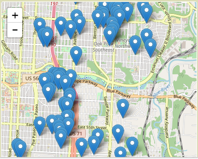

<div class="container">
    <div class="row">
        <div class="col-md-8">

            <h2>Hello we understand that you would like to buy a vacant lot or abandoned house.</h2>

            <div class="panel-group" id="accordion" role="tablist" aria-multiselectable="true">
                <div class="panel panel-default">
                    <div class="panel-heading" role="tab" id="headingOne">
                        <h4 class="panel-title">
                            <a role="button" data-toggle="collapse" data-parent="#accordion" href="#collapseOne"
                               aria-expanded="true" aria-controls="collapseOne">
                                What is your dream?
                            </a>
                        </h4>
                    </div>
                    <div id="collapseOne" class="panel-collapse collapse in" role="tabpanel"
                         aria-labelledby="headingOne">
                        <div class="panel-body">
                            Do you want to:
                            <ul>
                                <li>build a house for your family,</li>
                                <li>create a community garden see <a
                                        href="http://uni-kc.org/uni-urban-neighborhood-initiative-vacant-2-vibrant-guide-working-lots">A
                                    Guide to Working with Lots.</a>, or is it
                                </li>
                                <li>something else [takes them to an extended list]</li>
                            </ul>

                            <p>Depending on how you want to use the property there may be zoning restrictions...</p>

                            <button>Learn More</button>


                            <div class="site-comment">[ for each the dream types we would have a page that would give
                                them some background information about what they selected. Very short]
                                [Once we know what they want to do with their purchase we will know the "primary" zoning
                                codes]
                            </div>
                        </div>
                    </div>
                </div>
                <div class="panel panel-default">
                    <div class="panel-heading" role="tab" id="headingTwo">
                        <h4 class="panel-title">
                            <a class="collapsed" role="button" data-toggle="collapse" data-parent="#accordion"
                               href="#collapseTwo" aria-expanded="false" aria-controls="collapseTwo">
                                Have you selected a property?
                            </a>
                        </h4>
                    </div>
                    <div id="collapseTwo" class="panel-collapse collapse" role="tabpanel" aria-labelledby="headingTwo">
                        <div class="panel-body">


                            
                            <div class="site-comment">
                                <p>PINS: most likly only for Land Bank, Homesteading and posibly Jackson County annual
                                    sell.
                                <p>SHOULD WE HAVE A MAP? if only Land Bank and Homesteading, might direct them to their
                                    maps.
                                <p>This should give them the option to search by address or look at a map.
                                <p>dThe map should have filters for:
                                <ul>
                                    <li>properties with or without structures</li>
                                    <li>properties per particular zoning code and</li>
                                    <li>properties by owner type</li>
                                </ul>

                                [Under the map there should be links to KCMO and Jackson County Parcel Viewer,
                                Loveland?]
                            </div>
                        </div>
                    </div>
                </div>
                <div class="panel panel-default">
                    <div class="panel-heading" role="tab" id="headingThree">
                        <h4 class="panel-title">
                            <a class="collapsed" role="button" data-toggle="collapse" data-parent="#accordion"
                               href="#collapseThree" aria-expanded="false" aria-controls="collapseThree">
                                How to buy?
                            </a>
                        </h4>
                    </div>
                    <div id="collapseThree" class="panel-collapse collapse" role="tabpanel"
                         aria-labelledby="headingThree">
                        <div class="panel-body">
                            <div class="site-comment">
                                This is filler text from a old site, but covers the four main ways to aquire.
                            </div>
                            <dl>
                                <dt>Land Bank</dt>
                                <dd>
                                    You can purchase houses, buldings, &amp; vacant lots
                                    from the Land Bank. You will need a plan and be able to show that you have the
                                    access
                                    to resources necessary complete the project.
                                    Land Bank has thousands of properties for sale in Kansas City, Missouri.</p>

                                    <a style="text-align: center; padding-bottom: 3em; margin-bottom: 3em;">Learn
                                        More</a>
                                    <br>
                                </dd>
                                <dt>Homesteading Authority</dt>
                                <dd>
                                    Kansas City, Missouri Homesteading Authority is a nonprofit corporation controlled
                                    by the City of
                                    Kansas City.
                                    Homesteading Authority sells blighted properties at discounted prices to homeowners
                                    and
                                    investors who are committed to
                                    improving the neighborhood and community. Conditions are also placed on the sales to
                                    ensure
                                    houses
                                    are repaired and vacant lots are maintained, as agreed upon at the time of sale.</p>
                                    <button class="btn-sm">Learn More</button>
                                </dd>
                                <dt>Other Government Agencies</dt>
                                <dd>
                                    <b>Jackson County annual sell</b>
                                    <p>Other public entities and subdivisions may own vacant properties such as the Land
                                        Clearance
                                        Redevelopment Authority,
                                        school districts, the City of Kansas City, Land Trust of Jackson County, and
                                        more.</p>

                                    <p>See 
					<ul>
						<li><a href="http://www.jacksongov.org/DocumentCenter/Home/View/85">
                                        Jackson County MO, Buying Tax Foreclosure Property on the Courthouse Steps
						<li><a href="http://www.jacksongov.org/920/Delinquent-Land-Tax-Foreclosure-Sale">Jackson County MO, Delinquent Land Tax Foreclosure Sale</a>
					</ul>
                                    </a>
                                    </p>
                                    <button class="btn-sm">Learn More</button>
                                </dd>

                                <dt>Privatly Owned</dt>
                                <dd>
                                    Many properties are owned by out-of-state Limited Liability Companies. Finding these
                                    owners can
                                    be
                                    difficult, but these properties can be acquired through the Abandoned Housing Act or
                                    a private
                                    sale.
                                    <button class="btn-sm">Learn More</button>
                                </dd>
                            </dl>

                            <button>Learn More</button>
                        </div>
                    </div>
                </div>
            </div>


        </div>
        <div class="col-md-4">
            <h3>Things you should know</h3>


            <dl>
                <h4>Liens &amp; Assesments</h4>
                <dd style="font-size: small">
                    <p>Because these properties are abandoned, there could be liens assessed on the property.
                        It is a good idea to get a title report on the property and check to see if there are any
                        special assessments attached to the property.
                    </p>
                </dd>
                <h4>Clear Title</h4>
                <dd style="font-size: small">
                    <p>After learning of liens attached to the property, you can cure title defects
                        through a quiet title action or receiving quit claim deeds from interested parties.</p>
                </dd>
                <h4>Back Taxes</h4>
                <dd style="font-size: small">
                    <p>When purchasing from a private owner, property taxes may be due on the property.
                        After three years of delinquent taxes, the property will be sold at the Jackson
                        County tax sale.</p>
                </dd>

                <h4>Quick Claim Deeds</h4>
                <dd style="font-size: small">
                    <p>"Whatever I have is yours" but is not a warranty deed</p>
                </dd>

                <h4>Funding:</h4>

                <dd style="font-size: small">One of the biggest issues that people face is funding. Because banks often
                    will not loan money
                    for low value properties, you should consider alternative financing sources and assistance such as
                    tax
                    credits,
                    tax abatement, alternative loan sources, and more.
                </dd>
            </dl>
        </div>
    </div>
</div>
